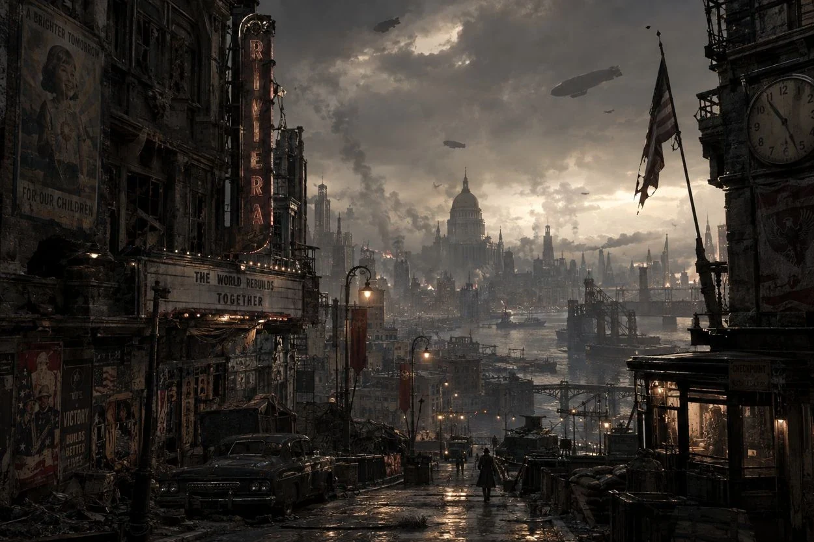

FIELD OPERATIONS / LOCATION DATABASEA CITY
A CITY
THAT REMEMBERS.
Four districts. One wounded metropolis. Explore its waterways, immense towers, and forgotten spaces through an interactive field atlas.
FILAMENT // POSTWAR RECONSTRUCTION // ELEVATED RAILWAYS // FLOODED CANALS // UNKNOWN LOCATIONS // FILAMENT // POSTWAR RECONSTRUCTION // ELEVATED RAILWAYS // FLOODED CANALS // UNKNOWN LOCATIONS //
THE CITY / SELECT A LOCATION
THE LIVING ATLAS.
Move between four established locations. The highlighted nodes reveal setting notes and surviving concept art.

BELOW THE CITY
BENEATH
THE SURFACE.
The sea-built atrium shelters a forgotten aquarium. Some things were never meant to be recovered.
VIEW THE WORLD ↗